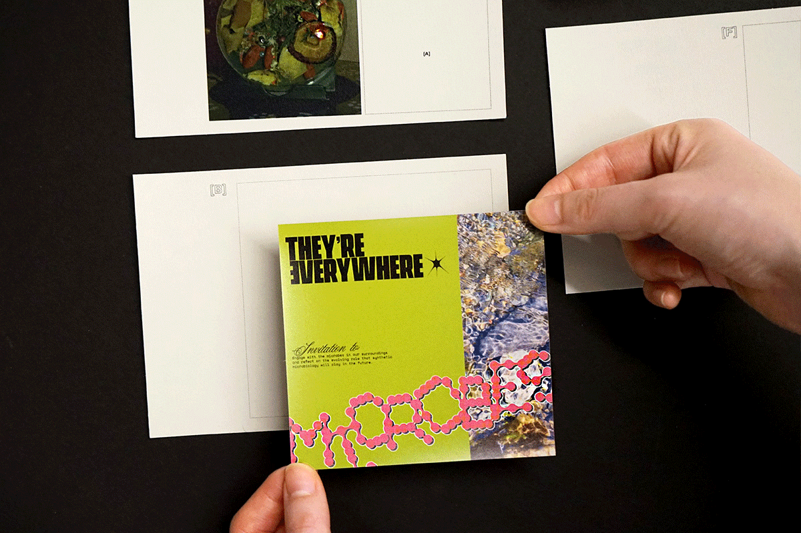

C stands for Care
Parsons Communication Design BFA Thesis Section C
☰
Lab 00
Microbes, although invisible to the naked eye, play a great part in our delicate ecosystem and are responsible for our existence. Even before birth, the process of cultivating and establishing a newborn’s microbiome is happening. They seamlessly integrate into our daily lives– from helping absorb and digest the foods we eat to producing the oxygen that we breathe – we live, breathe, and are made of microbes. Lab [00] examines my longtime infatuation with microbes and is a compilation of various projects and research in regards to the topic. Just like a lab, there are successful and unsuccessful experiments that are documented and highlighted through physical printed matter. The goal is to help others visualize and understand the importance of microbes and how they can enhance our future through conducting research and experimentation. For instance, one experiment in the lab compares and contrasts how diets can alter the diversity of gut microbes through petri dish tests, and ultimately affect the mood of a person.


We Are on Borrowed Time
We Are on Borrowed Time delves into the issue of digital overconsumption through a critical lens, focusing on behavioral patterns that are often overlooked. These behavioral patterns encompass the habitual actions and tendencies individuals exhibit in their digital interactions. Topics explored in the project include endless scrolling through social media feeds, incessant checking of notifications, and the addictive urge to accumulate digital content. We Are on Borrowed Time culminates in an installation consisting of various components, from traditional print media to digital manipulation. They serve as a means to raise awareness, with no restrictions on the tools or execution. The emphasis lies in how each medium enhances its message. It hopes to begin, and end, with one central question: How much do we consume, and how much of us is being consumed?


Medium Impact
Social media platforms have emerged as a key channel for information dissemination, however not everything is transmitted accurately. Content is frequently altered by its medium in this complex digital environment. Medium Impact examines how this reshaping leads to information one-sidedness and misrepresentation on X (Twitter), Instagram, TikTok, and YouTube. The project seeks to uncover the biases and distortions embedded within these platforms that influence public perception. From a broad examination through a part one printed data visualization poster (Medium Impact: Uncovering Information One-sidedness) to part two of the acrylic installation (Medium Impact: Observing Information One-sidedness), the study bridges macro-level trends with individual-level case studies. A motion graphic further summarises these insights, illustrating the full scope of medium impact on information dissemination. The data visualization poster focuses on three critical areas: 1) User Variable Factors —how audience demographics and behaviors impact platform content engagement; 2) Platform Content Focus Factors — investigating how platforms' algorithms and subject emphases affect what becomes visible and how; 3) Information Distortion Factors — revealing the discrepancies in factual accuracy and the extent of misinformation spread. The installation explores five distinct topics on social media, dissecting their representation from a universal event like a meteor sighting to intimate personal experiences, by employing a pixelated aesthetic, an “information blur” effect emerges, illustrating how events become mediated and misrepresented the one-sidedness by the social platforms. In essence, Medium Impact aims to encourage critical thought about the nuances of information propagation, emphasizing the need for authenticity and equity in our digital dialogues.


I Am an Onion
“I Am an Onion,” is a book on introspection and self-discovery through the lens of time, emotion, and personal identity. This book emerges from a simple practice: the documentation of instances of crying over the course of a year. This project serves as a reframing of time, highlighting activities like crying that are often dismissed as unproductive. In a world where time often seems fleeting and emotions can be both elusive and overwhelming, this practice provided a unique way for me to facilitate my perception of the passage of time. This reframing holds personal significance as it challenges the notion that moments spent feeling sad or struggling to overcome emotional obstacles are wasted. Beyond myself, the purpose of this project extends to validating the experiences of others. Celebrating the value of emotional processing, this book invites readers to explore their own emotional landscapes, peel back self-imposed limitations, and embrace the richness of human experience.

eneya
Arcturus
This project of digital literature aim to explore the art of immersive storytelling for user engagement through interactive and nonlinear narrative potentials of the web. Each poem is a digital maze, inviting users to actively participate and explore in the unfolding of the narrative.


Can I Come In?
Architectural Digest, an architecture publication, has been releasing celebrity home tour videos as part of their marketing campaigns since 2013 and subsequently did not start gaining popularity until 2017. The format of these videos slowly evolved from short 3 minute clips into 10-20 minute detailed walkthroughs where the celebrity has the opportunity to show their personality. This consequently created viral scenes like Dakota Johnson’s later debunked, ‘I love limes’ moment or Troye Sivan’s eclectic home that amassed a series of investigative interior design articles. While celebrities can afford to hire interior design studios with great taste to furnish their home, this degree of separation from the decorator and the actual stars feels impersonal and often lets the design objects go unnoticed as a result. Can I Come In?’ is an investigation into the financial absurdity of celebrity home tours and an appreciation of design objects. This publication highlights how much money goes into decorating these homes through a transparent investigation of the costs involved by using a design language that’s typically associated with finance. As a furniture lover, I wanted to provide context behind these objects through text and by incorporating aspects of home catalog design. The 5 videos sourced in this publication were selected by taking into account the virality of each video alongside my personal preference.


julia
rand
A Multi-Sensory Exploration of New York City's Bars Through Personal Experiences: Bridging Sensory and Social Divides Beyond Alcohol
This project aims to break the boundaries of traditional cultural exploration, offering a comprehensive, multi-sensory immersion in New York City's alcohol culture through a holistic approach. The core of the project is a book, a series of visual cubes, and some alcohol-related merchandise. The inception of this project stems from a personal experience of mine. On weekends, when the allure of a bar calls to me, I find myself hindered by the fact that some friends are either allergic to alcohol or averse to the bar setting. Despite my attempts to convey the essence of my bar outings and the nuanced flavors of various beverages through stories, there remains a palpable longing for them to experience the richness and joy of those moments more fully. The purpose of this project is to share the full range sensory experience of New York bars that I've personally visited, with those who are unable to visit these bars for various reasons which explore how to provide a wide audience with an immersive wine culture experience without having to drink directly. This project not only aims to provide alcohol enthusiasts with deep cultural insights but also builds a bridge for those who can't experience these environments personally, thereby narrowing the gap between direct and indirect bar culture experiences. Through this multifaceted approach, I hope to provide both an immersive and accessible approach to the exploration of wine culture.


It's Time! It's My Time.
The transition to adulthood is often fraught with anxiety and a sense of confusion, primarily due to the pressures of the societal frame or "social clock," which dictates the milestones and timelines individuals are expected to follow. This social clock creates a ubiquitous standard against which personal progress is measured. In response to this kind of anxiety and the pervasive feeling of being lost or falling behind when our life path does not alight with society expectations, my response employs the form of two books to reflect the societal pressures depicted through the social clock in China, using a triage of colors to signify the urgency levels of societal norms and the resultant anxiety faced in different life periods. Addressing that existential dilemma in the lifespan of a person, the second book provides a personal narrative that documents a day in my life, capturing what I have seen, felt, and experienced in the mundane. Through a simplistic design approach, utilizing typography and a calm, blue color palette reflecting the sky and nature, it emphasizes my presence. This duality in design not only contrasts but also complements the thematic essence of my work: it’s a journey from the external pressures of societal expectations to an internal focus on personal feelings and experiences. This practice is not merely a coping mechanism but a philosophical stance that emphasizes the value of individual experience and the intrinsic worth of the present moment over societal expectations to people.


I Could Not Resist
Within a capitalist system that feeds off of hopelessness, joy is resistance. The ability to imagine a better future, to believe in a life where happiness underlies our everyday notions, becomes a radical act. It is a spark of hope that signals to oppressive forces that they have not won. “I Could Not Resist” is a reflection of my attempts to resist the too-seductive forces of depression. During a time where I could not fathom doing anything but lay in bed, I pushed with brute force to continue creating. I wanted to materialize this Sisyphean experience into a sculptural and interactive exhibit. The first part was a challenge to create a book a day, allowing myself to be abstract in what a book could be. I focused on materiality, oftentimes grabbing from my surroundings; thus, each book becomes a reflection of my consumption and waste. The second part of my thesis is a freehand crocheted blanket, made using a technique called filet crochet — a historically laborious process used to create lace designs. With changing directions and varying font sizes, the blanket reads my sporadic thoughts of self-doubt and guilt. My thesis does not come to the satisfying conclusion of me finding light in dark times; it reveals cycles of guilt and shame as I endlessly pivot and repeat, unable to come up with an idea that is “good enough.” But its existence is proof of a willingness to do something — even if it seems to be for no reason.